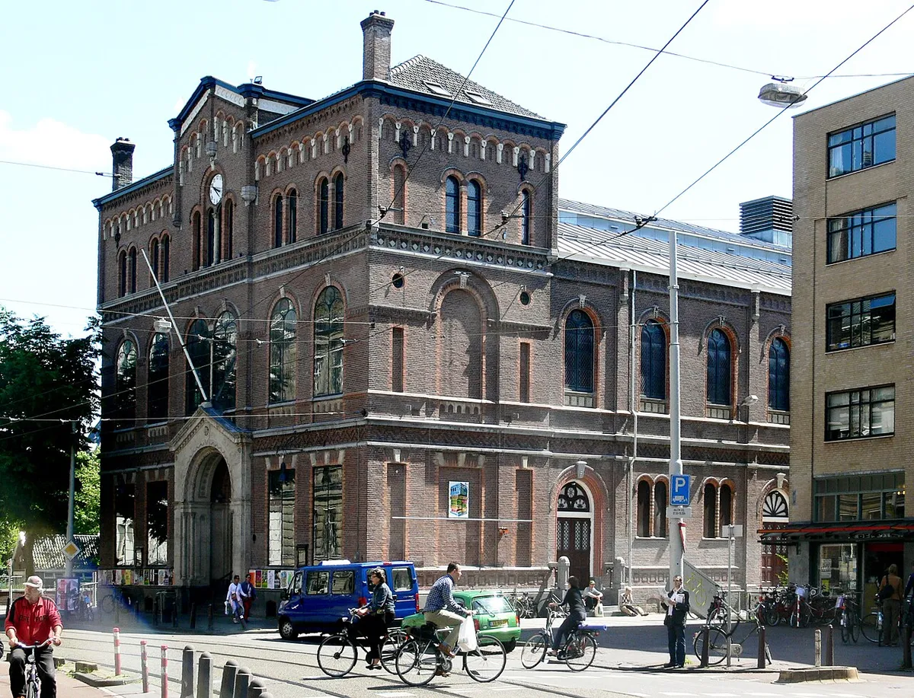
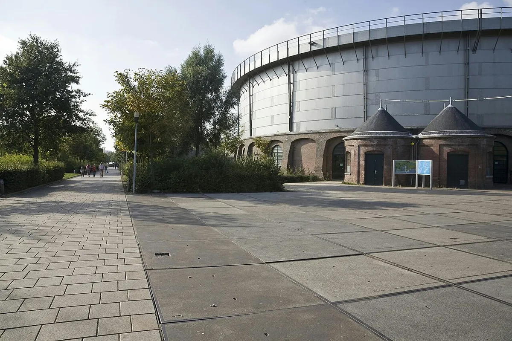

Amsterdam clubs
The best clubs in Amsterdam, from RoXY to Radion
The club that started Dutch dance music, the 24-hour rooms that replaced it, and the Amsterdam clubs worth a night now.
Clubs outside the canal belt.
Amsterdam clubs work differently from Berlin's or London's. The city gave out a small number of 24-hour licences to venues outside the old centre, on condition that they also run as cultural spaces, and that decision moved the serious clubbing out of the canal belt and into former schools, factories and a tower basement across the water. Most lists of the best nightclubs in Amsterdam are a mix of bars, tourist discos and a couple of real clubs. This one is about the rooms where house and techno are the point, and about the closed club that explains why the city takes them seriously.
Where it started: RoXY, Mazzo and iT.

Amsterdam's club history runs through two concert halls before it reaches a single nightclub. Paradiso was built in 1879 and 1880 as a meeting hall for a free-thinking congregation, De Vrije Gemeente, was occupied by young music fans in October 1967 and opened as a venue on 30 March 1968. Melkweg, in a former sugar refinery that later worked as a milk factory until 1969, opened on 17 July 1970. According to the people who worked there, Melkweg was the first hall in the city to programme house music regularly, with DJ Per as a Saturday resident. Paradiso put on a house night in 1991 that the musician and journalist Gert van Veen later called a very important night for him.
The club that turned all this into a scene was RoXY. It opened in 1987 near the Munttoren, with theme nights, performance and a door that was famously hard to pass. DJs who played there call it the cradle of Dutch dance music. RoXY burned down in 1999, and the people who lived through it describe the years after as a dead period for Amsterdam nightlife.
Two other rooms from the same era closed in 2004. Mazzo, on the Rozengracht, had opened in 1983 and was the oldest club in the city by the time it shut. iT, on the Rembrandtplein, ran from 1989 as a gay disco and became, in DJ Jean's words, the place to be.
That set was filmed by Boiler Room in Amsterdam in 2012, in the years when the city's techno was moving out of the centre and into the buildings described below.
From Club 11 to De School.
Club 11 opened in 2004 on the eleventh floor of the old postal building and ran until 2008. Joost van Bellen called it the first club in Amsterdam set in a post-war industrial building. The company behind it went on to run Trouw, now also closed, and then De School.
De School opened in 2016 in a former technical school in the west of the city. Its club sat in the old basement bicycle store, held around 700 people and had a 24-hour licence. It closed for good in January 2024, after a last weekend called Het Einde, because its municipal permits ran out and the site was earmarked for building.
The best clubs in Amsterdam now.
Ask Amsterdam's own crowd, Time Out's local writers and the city's specialist house and techno press, and the same names keep coming back. These are the best clubs in Amsterdam that are open now, weighted towards the names that appear across those lists rather than on one of them.
| Club | Area | Music and character | Best for |
|---|---|---|---|
| Shelter | Noord, under the A'DAM Tower | Techno and house on a Funktion-One system, 24-hour permit since 2016 | A long night across the IJ |
| Radion | Nieuw-West | Techno in the former ACTA building, 24-hour permit since 2015 | Bare concrete rooms and industrial techno |
| Lofi | Sloterdijk | A creative venue in an old bus warehouse | The local crowd |
| Garage Noord | Noord | Diverse, progressive bookings in a former car repair workshop | A small room |
| Warehouse Elementenstraat | Near the harbour | Four rooms of techno, reopened in 2014 | The biggest regular club nights |
| Melkweg | Leidseplein | A concert hall since 1970 with club nights | A night that starts with a band |
| Paradiso | Leidseplein | A former church hall, a venue since 1968 | The city's most famous venue |
Shelter opened in October 2016, during Amsterdam Dance Event, in the basement of the A'DAM Tower in Noord, with a 24-hour permit and a Funktion-One sound system. Radion has used the former ACTA building in Nieuw-West since 2014, turning old classrooms into bare concrete rooms, and got its 24-hour permit in 2015. Lofi sits in an old bus warehouse at Sloterdijk. Garage Noord is a small room in a former car repair workshop across the IJ. Warehouse Elementenstraat first ran as a hardcore venue in 1991 and 1992, near the harbour, and reopened in 2014 as a four-room warehouse for techno.
Hours, door policy and line-ups change week to week. Check each club's own listings for the night you are going.
Best techno clubs in Amsterdam.
If the question is only techno, the answer narrows to Shelter, Radion and Warehouse Elementenstraat for clubs, and the Gashouder for the big nights. The Gashouder is a 19th-century gasholder at the Westergasfabriek, a round iron hall that Awakenings has used since its first edition on 30 March 1997. It only opens for events, and those events, Awakenings above all, are what techno fans travel to Amsterdam for.

This is what the room sounds like, filmed by Mixmag inside the Gashouder at an Awakenings night during Amsterdam Dance Event in 2018.
Amsterdam Dance Event itself, every October, is when the whole city turns into one long club weekend, and when the smaller rooms book their biggest names of the year.
Why Amsterdam clubs stay open all day.
In 2012 Amsterdam elected Mirik Milan, a former club promoter, as its nachtburgemeester, or night mayor, a post that sits between the city council, the clubs and the people who live next to them. Under that arrangement the city gave 24-hour licences to around ten venues outside the old centre. The licence came with a condition: each venue also had to give room to the arts.
That is why the most famous club in Amsterdam for techno sits outside the centre. Shelter is across the water in Noord, Radion is out in Nieuw-West, and De School was in the far west. A night at one of them can start at eleven and end the following afternoon. It also explains why the Amsterdam nightlife most tourists see around Leidseplein and Rembrandtplein, with its bars and late discos, has little in common with the clubs in the table above.
Where to go out: Noord, Nieuw-West and the centre.
Amsterdam nightlife splits in three. Noord, across the IJ by ferry, has Shelter under the A'DAM Tower and Garage Noord. The west and Nieuw-West have Radion, Lofi at Sloterdijk and the Westergasfabriek with the Gashouder. The centre keeps Paradiso and Melkweg near Leidseplein, both better known now for concerts, with club nights after the bands finish.
Dekmantel, the city's summer festival, is the other reason people come. Boiler Room filmed Motor City Drum Ensemble there in 2014.
For more than one route through a night like that, the Selector plays a set at random from all 62,824 in the catalogue behind this site. The city guides for Berlin, London, Paris and Barcelona cover the same ground in other cities, and the best clubbing cities in Europe compares them all.
Amsterdam clubs FAQ.
What is the most famous club in Amsterdam?
For history, RoXY, which opened in 1987 near the Munttoren and burned down in 1999. Of the clubs open now, Shelter and Radion are the best known, both with 24-hour licences, and Paradiso is the most famous venue overall.
What is the hottest club in Amsterdam right now?
Shelter and Radion are the two techno clubs most often named first by Amsterdam's own crowd. Lofi and Garage Noord are smaller and are where the local scene tends to go.
What is the biggest nightclub in Amsterdam?
For regular club nights, Warehouse Elementenstraat, with four rooms. For events, the Gashouder, the round 19th-century gasholder where Awakenings has run since 1997, is the largest room the city's techno uses.
Why are some Amsterdam clubs open 24 hours?
Around ten venues outside the centre hold 24-hour licences, given on condition that the buildings also work as cultural spaces during the day. Shelter and Radion are among them.
What are the top clubs in Amsterdam for house music?
Dirty Disco's guide for house fans names Lofi, Shelter, Radion, Bret, Doka, Garage Noord, Thuishaven, Melkweg and Parallel. Amsterdam Dance Event in October is when every room books its biggest names.
Sources.
- Vice: Amsterdam's Most Legendary Clubs
- VPRO 3voor12: Heimwee naar Club 11
- Rozenberg Quarterly: High Amsterdam, van RoXY tot regelgeving
- Wikipedia: Paradiso (Amsterdam)
- Wikipedia: Melkweg
- Wikipedia: De School
- Wikipedia: Awakenings (festival)
- Time Out: The 13 best clubs in Amsterdam, updated 7 February 2025
- Dirty Disco: The Best Clubs in Amsterdam for House and Techno Fans
- A'DAM Toren: Shelter
- Mixmag: Two Amsterdam venues have been awarded 24-hour licenses
- PBS NewsHour: Behind Amsterdam's thriving club scene, this 'night mayor' keeps the peace
Continue reading
Read next.
 Rave spots~10 min read
Rave spots~10 min readBest Clubs in Berlin: The Legends and the Ones Still Open
The rooms that made Berlin a techno city, the famous clubs that closed, and the best clubs in Berlin that are still open.
Read article → Rave spots~6 min read
Rave spots~6 min readBest Clubs in Paris: From Le Palace to Rex Club
Le Palace, Les Bains Douches and Rex Club: the clubs that made Paris nightlife, how each became famous, and the best clubs in Paris open now.
Read article → Rave spots~6 min read
Rave spots~6 min readBest Clubs in Barcelona: From Zeleste to Razzmatazz
Razzmatazz, Nitsa and Macarena Club: how Barcelona's biggest club grew out of a 1970s live venue, and the best clubs in Barcelona open now.
Read article → Rave spots~11 min read
Rave spots~11 min readBest Clubs in NYC: From the Paradise Garage to Nowadays
Nowadays, Basement, Public Records, Good Room and Elsewhere: the best clubs in NYC for house and techno now, and the history from the Loft to Output.
Read article →